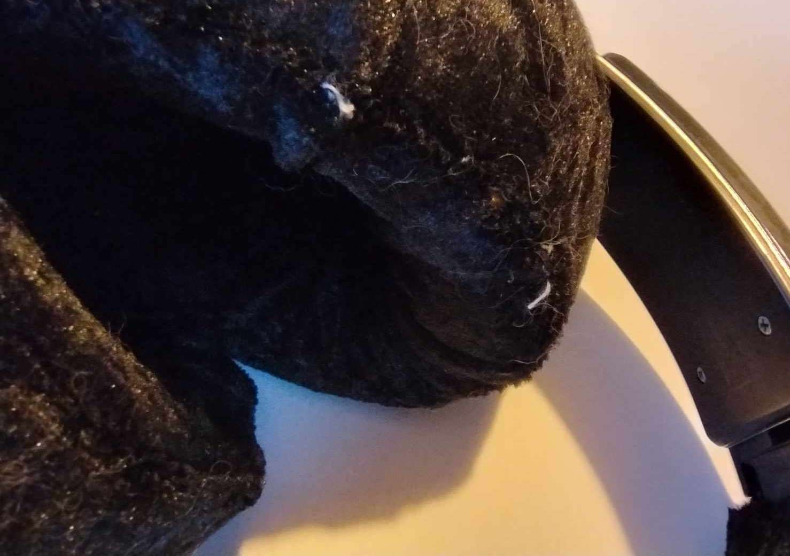

Bethany Davis
Sony MDR-XB700 mod and refurbish
What is it?
- This is a modified pair of Sony MDR-XB700 headphones. Sony first introduced the "XB" (eXtra Bass) line of headphones round about 2009, with the initial overhead line-up consisting of the on-ear XB300,
the more famous XB500 and the XB700. On the Japanese market, they also added the much rarer XB1000, something of a personal white whale. I modified this to have detachable cables, and sewed new covers for the pads.
While they're not perfect, and certainly not professional looking, the result is far better than the flaky pleather that I bought them with, and I no longer have to worry about internal cable breakage.
The headphones after I'd finished messing with them (please look past the cat hair, I didn't realise how much the camera picked that up).
Why I made it
- While initially passing off several opportunities to buy any of the XB line as a teenager to explore more "reference" sounding headphones such as the Brainwavz HM5, I came back for another look after
I saw a youtuber who I watch primarily for ipod modification, had reviewed a pair of the the XB1000s. After a midmorning scroll through facebook marketplace to see just
what kind of helicopters/paramotors they were trying to advertise at me, I happened upon a particularly beaten up pair of XB700s for a very reasonable price about a 15 minute drive from my house. I had no plans that
weekend, and I wasn't getting all that much use out of my sewing machine, so I decided I'd fulfill the dreams of my 14 year old self, and see if I couldn't fix them up, while making the cable detachable.
The detachable jacks
- Outside of nostalgia, and childhood wish fulfilment though, I am somewhat of an audiophile, and I knew from a few test listens back from when you could buy these new, that outside of being "ridiculously bassy",
the XB700s particularly, and to a lesser extent, the XB500s, were actually just good, ridiculously comfortable, fairly well built headphones, with an above average bass extension. Granted there's a dip in the mids just under 1000hz,
and the bass boost is still aptly extra, but a little working with the EQ, and they're genuinely capable cans with a fun sound signature which happens to suit my music taste.
graph showing the frequency response of the Sony MDR-XB700 taken from here
- Without turning this page into a review, or much less an advert, I do wish I could go back in time and tell myself to pull the trigger on these from new back in 2009. They're very fun, and I know I'd have treasured them. For now though,
it fits into my hobby of refurbishing 2000s era tech, with my successful refurbishments such as the various iPods I worked on, my later beginnings of attempting to retrofit a blackberry priv
(not quite 2000s I know), and some unfortunate, unlisted attmepts at rehousing PSPs (I had no idea they were so fussy, truthfully I'm never opening up another one unless it's on death's door already). This was a good project for my first foray
into another side of refurbishment with the sewing and more physical aspects.
How did it go?
To make the cups, some hand stitching was necessary, easily the weakest part in execution.
- As with my keyboard, the result was functional, if not all that pretty. I don't have a lot of practice sewing, and the actual covers were ridiculously fiddly to get on. Thankfully, much of my stitch work
is hidden behind the black velour I used instead of leather (I was finding the right leather would be too expensive to treat as a "have a go" project), and the bigger picture of a ridiculously oversized pair of headphones overshadows many of the flaws.
I am tempted to go back and see if I can solder the drivers a little better, and maybe replace the cables. I think I could do a better job, and I could get better quality cables, but I'm in no rush right now.
The headband cover tucks into an extremely small piece of plastic, and the velour I used was slightly too thick. As such, it comes untucked easily.
What next?
- I have a laundry list of things I'd love to do with these. From testing, I'm starting to see why they used non-detachable cables. Unfortunately the holes where you'd expect the audio jacks to live weren't big
enought house anything I tried, so my first port of call would either be to remove the cables I've put in, and solder the detachable cable I bought directly to the drivers (redoing my solder job in the process), or,
to 3D print a pair of replacement housings, and see how close I could get it to the original. I know there are issues with modifying the vent ports, so I'd have to be careful if that was the route I went down.
This where I'd put the jacks if there was enough room or I modified the housing
- After that, I'd consider redoing the stitching with leather. After talking to a friend, it became apparent how little I know about leather work, so that could be a whole project of its own really. Ultimately,
I'd need to actually go out and see some leather in person to check if it's the right sort of fabric. A lot of what I'd found initially would apparently have been too thick, in spite of having a thickness of less than
a millimetre. I'd also look into redoing the foam.
-
Other than these headphones specifically though, continuing on the theme of 2000s tech modification and refurbishment, I've had my eye on the PS2 Portable crowd over on BitBuilt for a while. While I have a perfectly functional PS2, and
era appropriate TV to attach it to, I do have the urge to take a crack at a PS2 Portable. Now that I have a 3D Printer, it feels like I've got to get my money's worth somehow. The other project on my bucket list, would be
refurbishing/repairing/retrofitting a pair of Jecklin Floats.
Jürg Jecklin wearing a pair of Jecklin Floats, headphones he invented.
- To Start on these, I'd want my skills to be a little more refined, so my next steps with this would be to take a class in whatever I'd need in advance with upholstering, and some of the electrical engineering.